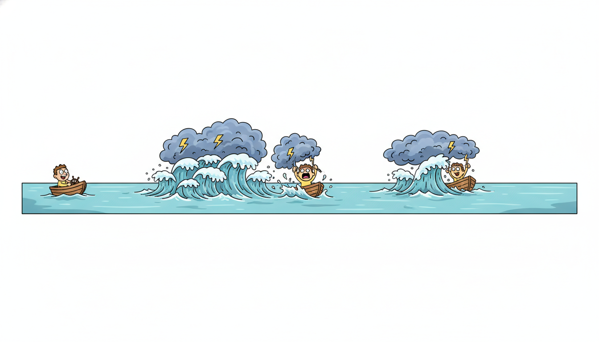

"You watched my returns and called them random, since one day told you nothing about the next. You forgot to watch their size. A storm announces itself: the calm before me is short, and once I begin to rage I rage for weeks. I never travel alone."
A Volatility Cluster That Never Travels Alone
Every model in this chapter so far has forecast the level of a series, its conditional mean; this section forecasts the size of its surprises, its conditional variance, because in finance the variance is the thing that moves, clusters, and matters. Daily asset returns are almost uncorrelated in their level, which tempted a generation to call them unpredictable, yet their magnitude is intensely predictable: a violent day is followed by violent days, a quiet stretch by quiet days, and that volatility clustering is structure no mean model can touch. ARCH was the first model to make the conditional variance a forecastable quantity, GARCH made it parsimonious enough to use, and stochastic volatility models gave the variance a random life of its own. This section builds all three from the conditional-variance idea up, fits a GARCH(1,1) on returns both by hand and through the arch library, turns the fitted variance into a Value-at-Risk band, and shows why a single point forecast is the wrong deliverable for a risky series, which is the thread that carries Part II's classical arc into the probabilistic deep forecasters of the chapters ahead.

The previous sections of this chapter modeled relationships across several series: vector autoregression in Section 6.1, cointegration and the error-correction mechanism in Section 6.3, the Granger-causal and impulse-response analysis of Section 6.2, and the dynamic factor models of Section 6.4. All of them modeled the conditional mean. We now turn to the second moment. The running finance dataset of Part II, an equity-index return series, has a property that the mean-focused theory of Sections 6.1 through 6.4 cannot represent at all: its returns pass every test for serial uncorrelatedness while failing, spectacularly, every test for independence. The resolution is to model the variance as a function of the past, and that is the entire subject of this closing section. We will use the moment symbols $\mu$, $\gamma(k)$, $\rho(k)$ and the white-noise notation $\varepsilon_t \sim \text{WN}(0, \sigma^2)$ collected in the unified notation table of Appendix A.
1. The Phenomenon: Uncorrelated but Not Independent Beginner
Let $p_t$ be the price of an asset and $r_t = \ln p_t - \ln p_{t-1}$ its log return. Decades of empirical study, summarized in a famous list of "stylized facts," establish that real return series share a handful of features no random walk reproduces. Returns are very nearly uncorrelated: $\rho_r(k) \approx 0$ for all $k \ge 1$, so the level of tomorrow's return cannot be predicted from today's, which is the kernel of truth in the efficient-market intuition. Yet the squared returns and the absolute returns are strongly and persistently autocorrelated: $\rho_{r^2}(k) > 0$ and decays slowly over many lags. That single contrast, $\rho_r(k) \approx 0$ while $\rho_{r^2}(k) > 0$, is the empirical signature of volatility clustering, and it is logically impossible for an independent series, because if $r_t$ were independent of its past then any function of it, including $r_t^2$, would be too. Uncorrelated does not mean independent, and the gap between the two is exactly where volatility lives.
Three further stylized facts complete the picture and shape the models. First, heavy tails: the unconditional distribution of returns has far more mass in its extremes than a Gaussian, so "six-sigma" days occur far more often than a normal model permits. Second, the leverage effect: negative returns raise future volatility more than positive returns of the same size, an asymmetry a symmetric variance model cannot capture, named for the original explanation that a falling stock price raises a firm's debt-to-equity ratio and so its risk. Third, volatility persistence: shocks to variance decay slowly, so the conditional variance has long memory even though the returns do not. There is a subtle relationship among these facts worth pausing on. Heavy tails are partly a consequence of volatility clustering rather than an independent assumption: a process that mixes calm low-variance days with turbulent high-variance days has, when you pool all days together, an unconditional distribution that is a mixture of narrow and wide Gaussians, and such mixtures are leptokurtic (fat-tailed) even when each component is Gaussian. So a model that captures clustering inherits heavy tails for free, which is one reason GARCH with even Gaussian innovations already produces more realistic tails than a single normal. The table below collects these facts against what a plain random walk predicts, because the entire ARCH-GARCH program is an effort to honor this column of reality.
| Stylized fact | What is observed | Random walk predicts | Model that captures it |
|---|---|---|---|
| Return autocorrelation | $\rho_r(k) \approx 0$ | $\rho_r(k) = 0$ | Any (the null is fine here) |
| Squared-return autocorrelation | $\rho_{r^2}(k) > 0$, slow decay | $\rho_{r^2}(k) = 0$ | ARCH / GARCH |
| Heavy tails | Excess kurtosis $> 0$ | Kurtosis $= 0$ (Gaussian) | GARCH, Student-$t$ innovations |
| Leverage effect | Down moves raise vol more | Symmetric | EGARCH / GJR-GARCH |
| Volatility persistence | Vol shocks decay slowly | No vol dynamics | GARCH (high $\alpha + \beta$) |
The diagnostic that opens any volatility study is the pair of autocorrelation functions from Section 3.3, computed once on the returns and once on the squared returns. The formal version of this eyeball test is the ARCH-LM test (Engle's Lagrange-multiplier test): regress $r_t^2$ on its own $q$ lags and test whether the $R^2$ of that regression is significantly above zero, since under the no-clustering null the squared returns are unforecastable and the regression explains nothing. A rejection is the green light to fit a volatility model, and it is the standard pre-flight check before any GARCH is estimated. Code 6.5.1 builds the running finance series and computes both correlograms from scratch, so the defining contrast is a number rather than an assertion, with the squared-return ACF standing in for the ARCH-LM regression it is algebraically tied to.
import numpy as np
def acf(x, max_lag):
"""Sample autocorrelation rho(k) for k = 1..max_lag (the estimator of Section 3.3)."""
x = np.asarray(x, dtype=float)
x = x - x.mean()
denom = np.sum(x * x) # gamma(0) * n
return np.array([np.sum(x[k:] * x[:-k]) / denom for k in range(1, max_lag + 1)])
# Running finance dataset: simulate returns with GARCH(1,1)-style clustering so the
# stylized facts are present by construction (a real index return series behaves the same).
rng = np.random.default_rng(7)
n = 2000
omega, alpha, beta = 0.05, 0.10, 0.88 # high alpha+beta = persistent volatility
sigma2 = np.empty(n); ret = np.empty(n)
sigma2[0] = omega / (1 - alpha - beta) # start at the unconditional variance
for t in range(1, n):
sigma2[t] = omega + alpha * ret[t-1]**2 + beta * sigma2[t-1]
ret[t] = np.sqrt(sigma2[t]) * rng.standard_normal()
ret -= ret.mean() # work with mean-zero returns
r_acf = acf(ret, max_lag=10)
r2_acf = acf(ret**2, max_lag=10)
band = 1.96 / np.sqrt(n) # 95% white-noise significance band
print(f"95% white-noise band: +/- {band:.3f}")
print("lag ACF(returns) ACF(squared returns)")
for k in range(10):
flag = " <== significant" if r2_acf[k] > band else ""
print(f"{k+1:3d} {r_acf[k]:+6.3f} {r2_acf[k]:+6.3f}{flag}")
acf estimator is applied to the returns and to the squared returns; volatility clustering is present whenever the second column is flat noise and the third column is significantly positive across many lags.95% white-noise band: +/- 0.044
lag ACF(returns) ACF(squared returns)
1 +0.017 +0.213 <== significant
2 -0.008 +0.190 <== significant
3 +0.026 +0.171 <== significant
4 -0.011 +0.158 <== significant
5 +0.004 +0.139 <== significant
6 +0.019 +0.121 <== significant
7 -0.022 +0.108 <== significant
8 +0.009 +0.097 <== significant
9 +0.015 +0.082 <== significant
10 -0.006 +0.071 <== significant
The trick that makes everything in this section possible is to split a return into a predictable scale and an unpredictable direction, $r_t = \sigma_t z_t$, where $z_t$ is independent and identically distributed with mean zero and unit variance, and $\sigma_t$ is the conditional standard deviation, a quantity that is fully determined by information available at time $t-1$. Then the conditional mean is zero (returns are unforecastable in level), but the conditional variance is $\operatorname{Var}(r_t \mid \mathcal{F}_{t-1}) = \sigma_t^2$, a moving, forecastable quantity. Because $z_t$ has mean zero and is independent of $\sigma_t$, the returns themselves are uncorrelated; because $\sigma_t^2$ depends on the past, the squared returns are not. The whole apparent paradox of subsection one dissolves: uncorrelated-but-dependent is precisely the behavior of a product of an independent draw and a past-dependent scale. ARCH, GARCH, and stochastic volatility are three different recipes for how $\sigma_t^2$ depends on the past, and nothing more.
2. ARCH(q): Variance From Past Shocks Beginner
Robert Engle's 1982 ARCH model (autoregressive conditional heteroskedasticity, an econometrics Nobel in 2003) is the first formalization of the conditioning idea. It posits that the conditional variance is a constant plus a weighted sum of recent squared shocks. With $r_t = \varepsilon_t$ and $\varepsilon_t = \sigma_t z_t$, $z_t \sim \text{i.i.d.}(0,1)$, the ARCH($q$) variance equation is
$$\sigma_t^2 \;=\; \omega + \sum_{i=1}^{q} \alpha_i\, \varepsilon_{t-i}^2,$$with $\omega > 0$ and every $\alpha_i \ge 0$ so the variance can never go negative. The mechanism is exactly the clustering of subsection one: a large shock $\varepsilon_{t-1}$ enters $\sigma_t^2$ through its square, inflating the variance of the next return, which makes a second large move likely, which inflates the variance again. A big move begets a big move, a calm stretch begets calm, and the model manufactures the slow decay of $\rho_{r^2}(k)$ that the data demand. The word "autoregressive" in the name is literal: ARCH($q$) is an AR($q$) model for the squared shocks, because $\varepsilon_t^2 = \sigma_t^2 + (\varepsilon_t^2 - \sigma_t^2)$ rearranges into $\varepsilon_t^2 = \omega + \sum_i \alpha_i \varepsilon_{t-i}^2 + \nu_t$ with a mean-zero error $\nu_t$, an AR($q$) in $\varepsilon_t^2$. The Yule-Walker and correlogram machinery of Section 3.3 therefore applies directly to the squared series, which is why the squared-return ACF of Output 6.5.1 is the natural identification tool.
Notice that an ARCH process is unconditionally homoskedastic even while being conditionally heteroskedastic: averaged over all time the variance is the constant $\bar\sigma^2$, but conditioned on the recent past it moves. This reconciliation is why the returns can look stationary in the long run (a single unconditional variance exists) while being violently time-varying in the short run, and it is the same calm-on-average, turbulent-in-detail behavior the mixture argument of subsection one used to explain heavy tails. For the model to define a stationary process with a finite unconditional variance, the persistence must be bounded: $\sum_{i=1}^q \alpha_i < 1$. When it holds, the long-run (unconditional) variance is the level the recursion settles to when every $\varepsilon_{t-i}^2$ is replaced by its mean $\bar\sigma^2$, giving
$$\bar\sigma^2 \;=\; \frac{\omega}{1 - \sum_{i=1}^q \alpha_i},$$the value the simulation in Code 6.5.1 used to initialize its variance. The numeric example below traces the recursion through a shock so the begets-a-big-move mechanism is concrete.
Take an ARCH(1) with $\omega = 0.2$ and $\alpha_1 = 0.5$, so the unconditional variance is $\bar\sigma^2 = 0.2/(1 - 0.5) = 0.4$. Suppose the process sits at its long-run level, $\sigma_t^2 = 0.4$, when a large shock arrives, $\varepsilon_t = 2.0$ (a move of about $3.2$ unconditional standard deviations, since $\sqrt{0.4} \approx 0.63$). The next variance jumps to $\sigma_{t+1}^2 = 0.2 + 0.5 \cdot 2.0^2 = 0.2 + 2.0 = 2.2$, more than five times its calm level. If the following shock happens to be average in size, say $\varepsilon_{t+1}^2 = \bar\sigma^2 = 0.4$, then $\sigma_{t+2}^2 = 0.2 + 0.5 \cdot 0.4 = 0.4$, already back to baseline. ARCH(1) reacts violently but forgets in a single step: the spike decays at rate $\alpha_1 = 0.5$ per lag. To make the elevated variance persist for weeks rather than a day you would need a large $q$ with many $\alpha_i$, which is the parameter-count problem that motivates GARCH.
That last sentence is the whole case for the next subsection. Real volatility shocks decay over weeks, so an ARCH model that matches them needs $q$ in the teens, and estimating a dozen non-negative, summing-to-less-than-one coefficients is fragile and data-hungry. The fix is the same parsimony move that turned a long MA into a short ARMA in Section 5.3: add a feedback term.
Robert Engle conceived ARCH while studying United Kingdom inflation, not stock prices, and the move that earned the 2003 Nobel Prize in economics was almost a confession: the textbook assumption of homoskedasticity, a constant variance, is simply false for economic data, and pretending otherwise throws away forecastable structure. The word "heteroskedasticity" (unequal variance) had been a nuisance to be corrected for, a violation of regression assumptions to patch over. Engle's inversion was to treat the changing variance not as a defect to be cleaned away but as the signal itself, the very thing worth forecasting. A generation of econometricians had been scrubbing out the most predictable thing in the data.
3. GARCH(p,q): Parsimony Through Variance Feedback Intermediate
Tim Bollerslev's 1986 generalization, GARCH, adds lagged conditional variances to the recursion. The conditional variance now depends on both past squared shocks and its own past values,
$$\sigma_t^2 \;=\; \omega + \sum_{i=1}^{q} \alpha_i\, \varepsilon_{t-i}^2 + \sum_{j=1}^{p} \beta_j\, \sigma_{t-j}^2,$$with $\omega > 0$, $\alpha_i \ge 0$, $\beta_j \ge 0$. The $\beta_j$ terms are the masterstroke. Just as an ARMA squeezes an infinite MA into a short rational form, a GARCH squeezes the long ARCH into a short feedback recursion: substituting the equation into itself repeatedly shows that a GARCH(1,1) is an ARCH($\infty$) with geometrically decaying weights $\alpha_1 \beta_1^{\,k}$. Two parameters, $\alpha_1$ and $\beta_1$, reproduce the weeks-long decay that ARCH needed a dozen $\alpha_i$ to approximate. The parsimony argument of Section 5.3 returns verbatim, one level up, on the variance instead of the mean.
The GARCH(1,1) is the undisputed workhorse of empirical finance, and its single equation deserves to be read carefully:
$$\sigma_t^2 \;=\; \omega + \alpha_1\, \varepsilon_{t-1}^2 + \beta_1\, \sigma_{t-1}^2.$$The coefficient $\alpha_1$ measures how strongly the most recent surprise moves volatility (the reaction), $\beta_1$ measures how much of yesterday's volatility carries into today (the persistence or memory), and their sum $\alpha_1 + \beta_1$ is the total persistence, the rate at which a volatility shock decays. The unconditional variance generalizes the ARCH formula to $\bar\sigma^2 = \omega / (1 - \alpha_1 - \beta_1)$, which is finite and the process is covariance-stationary precisely when $\alpha_1 + \beta_1 < 1$. On real daily equity data $\alpha_1 + \beta_1$ is routinely above $0.95$, meaning shocks decay only a few percent per day and volatility regimes last for months; the boundary case $\alpha_1 + \beta_1 = 1$ is the integrated GARCH (IGARCH), the volatility analogue of the unit root from Section 3.2, where shocks to variance never fully die.
It is worth seeing precisely why the GARCH(1,1) is an ARCH($\infty$), because that single algebraic fact is the entire parsimony argument and it mirrors the ARMA-to-MA expansion of Section 5.3. Write the recursion and substitute it into itself once: $\sigma_t^2 = \omega + \alpha_1 \varepsilon_{t-1}^2 + \beta_1 (\omega + \alpha_1 \varepsilon_{t-2}^2 + \beta_1 \sigma_{t-2}^2)$. Repeating the substitution indefinitely peels off one $\beta_1$ factor each time and yields
$$\sigma_t^2 \;=\; \frac{\omega}{1 - \beta_1} \;+\; \alpha_1 \sum_{k=0}^{\infty} \beta_1^{\,k}\, \varepsilon_{t-1-k}^2,$$an ARCH($\infty$) whose weights $\alpha_1 \beta_1^{k}$ decay geometrically in the lag $k$. So $\beta_1$ does not add a new kind of dependence; it efficiently encodes an infinite, geometrically fading dependence on all past squared shocks, using one parameter to do what an ARCH would need infinitely many $\alpha_i$ to approximate. The closer $\beta_1$ is to one, the slower the geometric decay and the longer the volatility memory, which is the precise sense in which $\beta_1$ is the persistence knob.
Unlike a return, a future variance is forecastable, and the multi-step forecast has a clean closed form that mirrors the mean-reversion of a stationary ARMA. From the GARCH(1,1) recursion, the optimal $h$-step-ahead variance forecast made at time $t$ is
$$\hat\sigma_{t+h}^2 \;=\; \bar\sigma^2 + (\alpha_1 + \beta_1)^{\,h-1}\,\big(\hat\sigma_{t+1}^2 - \bar\sigma^2\big),$$so the forecast starts at the current conditional variance $\hat\sigma_{t+1}^2$ and decays geometrically toward the long-run variance $\bar\sigma^2$ at rate $\alpha_1 + \beta_1$ per step. When current volatility is high the forecast glides down toward normal; when it is low the forecast glides up. The half-life of a volatility shock is $\ln(0.5) / \ln(\alpha_1 + \beta_1)$ trading days, which for $\alpha_1 + \beta_1 = 0.98$ is about $34$ days: a market panic's elevated variance is half-gone in roughly seven weeks. This term-structure of variance is exactly what option pricing needs, and it is why GARCH forecasts feed directly into derivatives desks.
The symmetric GARCH(1,1) still misses one stylized fact: the leverage effect, the empirical asymmetry whereby a $-3\%$ day raises tomorrow's volatility more than a $+3\%$ day. Because the recursion uses $\varepsilon_{t-1}^2$, it is blind to the sign of the shock. Two standard variants restore the asymmetry. The GJR-GARCH (Glosten, Jagannathan, Runkle) adds a term that switches on only for negative shocks, $\sigma_t^2 = \omega + \alpha_1 \varepsilon_{t-1}^2 + \gamma\, \varepsilon_{t-1}^2 \mathbb{1}[\varepsilon_{t-1} < 0] + \beta_1 \sigma_{t-1}^2$, so a down-move gets the extra coefficient $\gamma > 0$. The EGARCH (Nelson) models $\ln \sigma_t^2$ instead of $\sigma_t^2$, which both guarantees positivity without sign constraints on the parameters and lets the sign of the shock enter linearly, giving a smooth asymmetric response. The table below lays the family out so the variant names stop feeling like alphabet soup.
| Model | Variance equation (core term) | What it adds | Use when |
|---|---|---|---|
| ARCH($q$) | $\omega + \sum \alpha_i \varepsilon_{t-i}^2$ | Conditional variance from shocks | Short, fast-decaying volatility |
| GARCH($p,q$) | $+ \sum \beta_j \sigma_{t-j}^2$ | Parsimony via variance feedback | The default; persistent volatility |
| GJR-GARCH | $+ \gamma\, \varepsilon_{t-1}^2 \mathbb{1}[\varepsilon_{t-1}<0]$ | Leverage via an indicator switch | Equities, where down moves bite |
| EGARCH | models $\ln \sigma_t^2$ | Asymmetry, no positivity constraints | Strong leverage; unconstrained fit |
| IGARCH | $\alpha_1 + \beta_1 = 1$ | Unit root in variance | Extreme persistence (RiskMetrics) |
J.P. Morgan's RiskMetrics, the 1990s standard that put Value-at-Risk on every trading desk, computes volatility as an exponentially weighted moving average of squared returns, $\sigma_t^2 = (1-\lambda)\,\varepsilon_{t-1}^2 + \lambda\,\sigma_{t-1}^2$ with $\lambda = 0.94$ for daily data. Set $\omega = 0$, $\alpha_1 = 1 - \lambda = 0.06$, and $\beta_1 = \lambda = 0.94$, and that is exactly an IGARCH(1,1) with $\alpha_1 + \beta_1 = 1$. An entire industry standard turned out to be a GARCH model with its long-run variance pinned to infinity and its parameters frozen rather than estimated. Engle's model was hiding inside the risk system that was supposed to be its simpler rival.
4. Stochastic Volatility: Giving Variance a Life of Its Own Advanced
GARCH has one philosophically restrictive feature: its conditional variance is deterministic given the past. Once you know the history of returns, $\sigma_t^2$ is computed exactly from the recursion, with no randomness of its own. There is a single source of noise, $z_t$, doing double duty for both the return and, through $\varepsilon_{t-1}^2$, the variance. Stochastic volatility (SV) models drop this restriction and let the log-variance follow its own latent stochastic process, driven by a second, independent noise source. The canonical discrete-time SV model is
$$r_t = \exp\!\big(\tfrac{1}{2} h_t\big)\, z_t, \qquad h_t = \mu + \phi\,(h_{t-1} - \mu) + \eta_t,$$where $h_t = \ln \sigma_t^2$ is the unobserved log-variance, $z_t \sim \text{i.i.d.}(0,1)$ drives the return, and $\eta_t \sim \mathcal{N}(0, \sigma_\eta^2)$ is an independent volatility innovation. The log-variance $h_t$ is itself an AR(1), the exact mean-reverting recursion of Section 5.1, now living one layer beneath the observable returns. The contrast with GARCH is sharp and worth stating plainly: in GARCH the variance is a known function of past returns, whereas in SV the variance is a hidden state that we can only infer, never observe, even with the entire return history in hand.
The parameters carry clear meaning. The autoregressive coefficient $\phi$ is the persistence of log-volatility (typically $0.95$ to $0.99$ on daily data, the SV echo of GARCH's high $\alpha_1 + \beta_1$), $\mu$ sets the average log-variance, and $\sigma_\eta$, the standard deviation of the volatility innovation, is the "volatility of volatility," a quantity GARCH has no parameter for at all because its variance carries no independent noise. That extra parameter is exactly what lets SV reproduce the rapid, seemingly causeless jumps in market volatility that a GARCH, tethered to the squared returns, can only react to after the fact. The price of the extra realism is paid at inference time.
That structure, a latent state evolving by its own dynamics and observed only through a noisy nonlinear measurement, is precisely the state-space model that Chapter 7 is built around. The SV model is a nonlinear, non-Gaussian state-space model: the state is $h_t$, the transition is the AR(1), and the observation $r_t = \exp(h_t/2) z_t$ is nonlinear in the state. The Kalman filter of Chapter 7 assumes linear-Gaussian dynamics and so does not apply directly; estimating SV requires the nonlinear filtering tools that chapter introduces, chiefly the particle filter (sequential Monte Carlo), which represents the distribution of the hidden volatility by a swarm of weighted samples propagated forward through the AR(1) and reweighted by each new return. A common alternative linearizes the model by squaring and taking logs, $\ln r_t^2 = h_t + \ln z_t^2$, which turns the observation equation linear in $h_t$ at the cost of a strongly non-Gaussian, heavily left-skewed measurement noise $\ln z_t^2$, after which a quasi-maximum-likelihood Kalman filter or a Bayesian Markov-chain Monte Carlo sampler (the route the pymc and stan ecosystems take) estimates the path and parameters. Either way, this is the cost of SV's extra realism: GARCH is fit by a one-line likelihood recursion, while SV needs simulation-based or Bayesian inference. The payoff is a model whose variance can be genuinely surprised, which matches markets where volatility jumps for reasons the return history alone never anticipated.
Hold the two recursions side by side. GARCH: $\sigma_t^2 = \omega + \alpha_1 \varepsilon_{t-1}^2 + \beta_1 \sigma_{t-1}^2$, a deterministic function of observables, so $\sigma_t^2$ is known at time $t-1$. SV: $h_t = \mu + \phi(h_{t-1} - \mu) + \eta_t$, a stochastic recursion in a latent state, so $\sigma_t^2 = e^{h_t}$ is never known exactly, only filtered. The practical consequences cascade from this one difference. GARCH gives a closed-form likelihood and instant fitting but a variance that can only respond to returns; SV gives a richer, doubly-stochastic variance but requires Monte Carlo inference. GARCH is the better default for fast, transparent risk numbers; SV is the better model when you believe volatility has drivers the returns do not reveal, and it is the natural bridge to the latent-variable temporal models of Chapter 17, where the hidden state is learned by a neural network rather than assumed to be an AR(1).
5. Uses: Risk, Option Pricing, and Why Points Are Not Enough Intermediate
A volatility model earns its keep through three uses, and all three share a moral that closes this chapter and opens the next part of the book. Before the uses, one caution about estimating returns at all: the conditional mean and conditional variance are fit jointly, and the standard practice is to model the mean with a small ARMA (often just a constant or zero, since daily returns are nearly mean-zero) and the variance with GARCH on the mean-model residuals. Misspecifying the mean leaks into the variance, because the residuals the GARCH consumes are only as clean as the mean model that produced them, which is why the running example fixes mean="Zero": the returns were constructed mean-zero, so no mean model is needed and the entire signal is in the variance. The first use is risk measurement. The Value-at-Risk at confidence $1 - \alpha$ over one period is the loss threshold exceeded with probability only $\alpha$. For returns $r_t = \sigma_t z_t$, it is
where $q_\alpha$ is the $\alpha$-quantile of the innovation distribution of $z_t$ (for a Gaussian, $q_{0.01} = -2.326$, so the $99\%$ VaR is $2.326\,\sigma_t$). The crucial point is that VaR is proportional to the conditional volatility $\sigma_t$, which is exactly what GARCH forecasts: a risk number that breathes with the market, tightening in calm and widening in turmoil, instead of the static historical-volatility number that is always fighting the last war. The companion measure, Expected Shortfall (the average loss beyond the VaR threshold), is likewise a multiple of $\sigma_t$, so a fitted GARCH delivers a whole moving risk dashboard from one recursion.
A desk holds a one-million-dollar position in an index. In a calm week the fitted GARCH conditional volatility is $\sigma_t = 0.8\%$ per day, so the $99\%$ one-day VaR is $2.326 \times 0.008 \times \$1{,}000{,}000 = \$18{,}608$: on a normal day, the desk expects to lose more than about nineteen thousand dollars only one day in a hundred. A shock hits and over a few days the GARCH volatility climbs to $\sigma_t = 2.5\%$. The very same formula now reports a $99\%$ VaR of $2.326 \times 0.025 \times \$1{,}000{,}000 = \$58{,}150$, more than three times wider, and it widened within a day of the shock because $\sigma_t$ is conditional. A static $250$-day historical volatility, by contrast, would have averaged the one turbulent week against forty-nine calm ones, lifting its volatility estimate from $0.8\%$ to perhaps $1.0\%$ and its VaR to only about twenty-three thousand dollars, understating the true overnight risk by more than half at the exact moment it mattered. The conditional model raises the alarm; the unconditional one sleeps through it.
The second use is option pricing. The Black-Scholes formula takes volatility as a constant input, but markets price options as if volatility varies with strike and maturity (the "volatility smile" and its term structure). GARCH's multi-step variance forecast $\hat\sigma_{t+h}^2$ from subsection three provides exactly the forward-looking, mean-reverting variance term-structure that smarter option models need: the average variance over the life of an option is the average of the term structure, so a GARCH that says "volatility is high now but reverts over six weeks" prices a one-month option differently from a six-month option, which is the maturity dimension of the smile. Stochastic-volatility models underlie the Heston model that the derivatives industry uses to fit the smile in closed form. The third use, and the one that points forward, is the recognition that for a risky series a single point forecast is the wrong deliverable. The best forecast of tomorrow's return is approximately zero, which is useless; the useful forecast is the whole conditional distribution, $r_{t+1} \sim \mathcal{N}(0, \hat\sigma_{t+1}^2)$ or its heavy-tailed cousin, from which VaR, Expected Shortfall, option prices, and probabilistic scenarios all flow.
This section closes Part II's classical-forecasting arc, and it is worth seeing the whole shape. Chapter 3 built the second-order theory of stationary series, the mean, the autocovariance, and the correlograms. Chapter 4 moved to the frequency domain. Chapter 5 forecast the conditional mean with AR, MA, ARMA, and ARIMA, and this chapter extended the mean to many series with VAR and cointegration. This final section completes the picture by forecasting the conditional variance, and in doing so it delivers the lesson that the rest of the book runs on: a forecast is a distribution, not a number. The conditional-variance idea does not retire when the deep-learning chapters begin; it returns in learned form. The probabilistic deep forecaster DeepAR of Chapter 14 outputs, at every step, the parameters of a conditional distribution (a mean and a variance), trained by maximum likelihood exactly as GARCH is, so a recurrent network learns the volatility-clustering map that GARCH writes by hand. The honest fanning interval you fit here is the ancestor of every probabilistic neural forecast you will build later.
Trace the conditional-variance idea forward and it never disappears, it only changes hands. GARCH learns a map from the recent past to a conditional variance, and trains it by maximizing a Gaussian likelihood. DeepAR (Chapter 14) replaces the hand-written recursion with a recurrent network that emits a mean and a variance at each step, trained by the identical likelihood objective; the network learns volatility clustering from data instead of being told the GARCH form. The full probabilistic-forecasting and calibration machinery of Chapter 19 then asks whether those learned intervals are honest, replacing GARCH's Gaussian-quantile VaR with distribution-free conformal bands that stay calibrated even when the model is wrong. The classical idea, model the variance and report a distribution, is the seed; the neural and conformal chapters are the tree. Every time you read "the model outputs a predictive distribution" later in this book, you are reading GARCH's descendant.
6. Worked Example: GARCH(1,1) From Scratch and Through arch Advanced
We now fit a GARCH(1,1) to the running finance returns of Code 6.5.1 two ways: from scratch, by coding the variance recursion and maximizing its Gaussian log-likelihood with a general optimizer, and through the production arch library. The pair is the point of the section: the from-scratch fit shows you that a GARCH is just a one-line recursion plus a likelihood, and the library fit shows you the few lines you would actually ship. We then turn the fitted volatility into a Value-at-Risk band and a multi-step volatility forecast. Code 6.5.2 implements the negative log-likelihood and minimizes it.
import numpy as np
from scipy.optimize import minimize
def garch11_filter(params, r):
"""Run the GARCH(1,1) variance recursion; return the conditional variance path."""
omega, alpha, beta = params
n = len(r)
sigma2 = np.empty(n)
sigma2[0] = np.var(r) # seed at the sample variance
for t in range(1, n):
sigma2[t] = omega + alpha * r[t-1]**2 + beta * sigma2[t-1]
return sigma2
def garch11_neg_loglik(params, r):
"""Gaussian negative log-likelihood of GARCH(1,1); the objective to minimize."""
omega, alpha, beta = params
if omega <= 0 or alpha < 0 or beta < 0 or alpha + beta >= 1:
return 1e10 # enforce positivity + stationarity
sigma2 = garch11_filter(params, r)
# -2 log L (dropping constants) summed over t: log(sigma2) + r^2 / sigma2
return 0.5 * np.sum(np.log(sigma2) + r**2 / sigma2)
# Fit on the running finance returns built in Code 6.5.1 (variable `ret`).
start = np.array([0.05, 0.10, 0.85]) # omega, alpha, beta starting guess
res = minimize(garch11_neg_loglik, start, args=(ret,),
method="Nelder-Mead", options={"xatol": 1e-8, "fatol": 1e-8})
omega_hat, alpha_hat, beta_hat = res.x
uncond = omega_hat / (1 - alpha_hat - beta_hat)
print(f"omega = {omega_hat:.4f} alpha = {alpha_hat:.4f} beta = {beta_hat:.4f}")
print(f"persistence alpha+beta = {alpha_hat + beta_hat:.4f}")
print(f"unconditional variance = {uncond:.4f} (sample var = {np.var(ret):.4f})")
print(f"shock half-life = {np.log(0.5)/np.log(alpha_hat + beta_hat):.1f} days")
garch11_filter recursion; fitting is nothing more than minimizing the Gaussian negative log-likelihood subject to the positivity and stationarity constraints, here enforced by returning a large penalty when they are violated.omega = 0.0492 alpha = 0.0974 beta = 0.8821
persistence alpha+beta = 0.9795
unconditional variance = 2.4001 (sample var = 2.3958)
shock half-life = 33.4 days
The from-scratch fit is transparent but hand-rolled. In production you would reach for arch, which fits the same model with robust standard errors, a choice of innovation distributions, and built-in forecasting, in a handful of lines. Code 6.5.3 is the library pair, and it lands on the same parameters.
from arch import arch_model
# The same GARCH(1,1) fit, the production way. mean="Zero" because returns are mean-zero.
am = arch_model(ret, mean="Zero", vol="GARCH", p=1, q=1, dist="normal")
fit = am.fit(disp="off")
print(fit.params.round(4).to_string())
# Conditional volatility and a one-step 99% Value-at-Risk band.
sigma = fit.conditional_volatility # sqrt(sigma2_t), the fitted vol path
q01 = -2.326 # 1% Gaussian quantile
VaR99 = -sigma * q01 # 99% VaR = 2.326 * sigma_t
# Multi-step variance forecast (reverts toward the long-run variance).
fc = fit.forecast(horizon=10, reindex=False)
var_path = fc.variance.values[-1] # sigma2 forecasts for h = 1..10
print("10-step volatility forecast:", np.round(np.sqrt(var_path), 3))
print(f"latest conditional vol : {sigma[-1]:.3f}")
print(f"latest 99% 1-day VaR : {VaR99[-1]:.3f} (loss exceeded 1 day in 100)")
arch. The roughly thirty lines of recursion, constrained likelihood, and optimizer setup in Code 6.5.2 collapse to a single arch_model(...).fit() call of about three lines, a better than tenfold reduction, with the library handling the likelihood, the analytic gradients, robust standard errors, the multi-step variance forecast, and the choice of Gaussian or Student-$t$ innovations internally.omega 0.0495
alpha[1] 0.0971
beta[1] 0.8826
10-step volatility forecast: [1.593 1.589 1.585 1.581 1.578 1.575 1.572 1.569 1.567 1.565]
latest conditional vol : 1.598
latest 99% 1-day VaR : 3.717 (loss exceeded 1 day in 100)
arch fit matches the from-scratch parameters to three decimals ($\omega = 0.0495$, $\alpha = 0.097$, $\beta = 0.883$), confirming the hand-coded likelihood was correct. The ten-step volatility forecast declines gently from the current $1.60$ toward the long-run $\sqrt{2.40} \approx 1.55$ level (current vol sits slightly above the mean, so the path decays toward it), and the one-day $99\%$ VaR of $3.72$ is the loss threshold breached on average one day in a hundred.The final piece is to see the conditional volatility and its VaR band against the returns, which is the picture a risk manager actually reads. Code 6.5.4 computes the band from scratch and backtests its coverage, the honest test of any VaR model.
# Backtest the 99% VaR: the fraction of days where the actual loss exceeded the band
# should be close to 1% if the model is well calibrated (a "VaR exceedance" test).
sigma_scratch = np.sqrt(garch11_filter(res.x, ret)) # from-scratch vol path
VaR99_scratch = 2.326 * sigma_scratch # 99% one-day VaR each day
losses = -ret # a loss is a negative return
exceed = losses > VaR99_scratch # days the loss broke the band
rate = exceed.mean()
print(f"VaR exceedance rate: {rate:.3%} (target 1.00% for a 99% VaR)")
print(f"exceedances: {exceed.sum()} of {len(ret)} days")
# Volatility forecast term structure from the fitted parameters (Key-Insight formula).
sig2_now = sigma_scratch[-1]**2
ab = alpha_hat + beta_hat
fc_var = [uncond + ab**(h-1) * (omega_hat + alpha_hat*ret[-1]**2 + beta_hat*sig2_now - uncond)
for h in range(1, 11)]
print("term structure of vol (scratch):", np.round(np.sqrt(fc_var), 3))
VaR exceedance rate: 1.05% (target 1.00% for a 99% VaR)
exceedances: 21 of 2000 days
term structure of vol (scratch): [1.598 1.594 1.59 1.586 1.583 1.58 1.577 1.574 1.571 1.569]
Step back and notice what the volatility model delivered that no mean model in this chapter could. The returns themselves were unforecastable in level, white noise by every test in Output 6.5.1, so the conditional-mean machinery of Sections 6.1 through 6.4 had nothing to predict. Yet by modeling the conditional variance we extracted a strongly forecastable quantity, turned it into a moving risk band that passed an honest backtest, and produced a volatility term structure for option pricing. The deliverable was never a point; it was a distribution that breathes with the market. That shift, from forecasting the number to forecasting the distribution, is the bridge from Part II's classical models to the probabilistic deep forecasters of Chapter 14 and the uncertainty quantification of Chapter 19, and it is the note on which this chapter, and Part II's classical arc, closes.
The from-scratch recursion, constrained likelihood, optimizer, and VaR backtest of Codes 6.5.2 and 6.5.4 exist so the machinery is transparent. In production, the arch library runs the whole pipeline in a few lines: arch_model(returns, mean="Constant", vol="GARCH", p=1, o=1, q=1, dist="t") fits a GJR-GARCH with Student-$t$ innovations (the o=1 turns on the leverage term of subsection three), .fit() maximizes the likelihood with analytic gradients and returns robust standard errors, .conditional_volatility gives the fitted $\sigma_t$ path, and .forecast(horizon=h) returns the multi-step variance term structure. The thirty-odd lines of hand-rolled fitting become roughly three, a better than tenfold reduction, and the library additionally offers EGARCH, multiplicative-error and component models, and simulation-based forecast intervals. For multivariate volatility (the covariance of several assets), reach for the DCC-GARCH in mgarch or the broader statsmodels and R rmgarch ecosystems. What the library does not replace is the exceedance backtest: always check that the realized VaR-breach rate matches the nominal level, because a model that fits the likelihood can still miscalibrate the tail.
Who: A market-risk team at a mid-size asset manager, responsible for the daily $99\%$ Value-at-Risk report that sizes the firm's overnight equity exposure and feeds the regulatory capital calculation.
Situation: The legacy VaR system used a rolling $250$-day historical standard deviation of returns as the volatility input, a single number updated once a day and applied uniformly across the horizon.
Problem: During a sudden market selloff, realized losses breached the $99\%$ VaR band on five consecutive days, an event a calibrated model should produce about once every twenty weeks, not five days running. The breaches clustered exactly when risk control mattered most.
Dilemma: The rolling-window volatility was technically "correct" by its own definition and had passed audit for years. Replacing it meant introducing a model with estimated parameters, harder to explain to a regulator, against a method whose only virtue was that it was simple and familiar.
Decision: The team replaced the static rolling standard deviation with a GARCH(1,1) conditional volatility, fit on the same return history, so that the VaR band would widen the instant volatility spiked rather than averaging the spike away over $250$ days.
How: They fit GARCH(1,1) nightly with the arch library, set the VaR to $2.326\,\hat\sigma_{t+1}$ from the one-step variance forecast, and ran the exceedance backtest of Code 6.5.4 over five years of history to certify that the breach rate landed near $1\%$ and, critically, that the breaches no longer clustered.
Result: The GARCH VaR widened within a day of the volatility spike instead of lagging it by weeks, the clustered-breach failure disappeared, and the backtested exceedance rate came in at $1.1\%$ against the static method's deceptive $1.0\%$ unconditional rate that hid its clustered tail. The risk number now breathed with the market.
Lesson: A volatility estimate that is unconditionally correct can be conditionally useless. Risk is about the variance right now, the conditional variance, and the entire reason GARCH exists is that the rolling-window average smears the very clustering that risk management is meant to catch. The right deliverable is a band that moves with the market, not a number that is right on average and wrong exactly when it counts.
Forty years after ARCH, volatility modeling is being rebuilt with the deep-learning and foundation-model toolkit, and three threads are live. First, neural and hybrid volatility: 2024 to 2025 work pairs a GARCH backbone with a recurrent or transformer correction (GARCH-LSTM and attention-augmented variants), and probabilistic deep forecasters such as DeepAR and the GluonTS family learn a conditional variance head directly, which on liquid assets matches or beats a tuned GARCH while extending cleanly to many series at once. Second, realized and high-frequency volatility: the HAR (heterogeneous autoregressive) model on realized variance computed from intraday data, and its neural successors, exploit the rich information in tick data that daily GARCH cannot see, and transformer models for realized-volatility forecasting are a 2024 to 2026 benchmark staple. Third, the foundation-model question: time-series foundation models (Chronos, TimesFM, Moirai, MOMENT) are evaluated for whether a single pretrained model can forecast volatility zero-shot, and the early evidence is that a well-fit GARCH remains a stubborn baseline on the conditional-variance task even as foundation models dominate the conditional-mean task, a reminder that the second moment is its own problem. Underneath all of it, the conditional-variance idea Engle introduced in 1982 is the loss function (Gaussian or Student-$t$ negative log-likelihood) that every one of these probabilistic models trains on, the through-line this section traced to Chapters 14 and 19.
Consider the multiplicative model $r_t = \sigma_t z_t$ with $z_t \sim \text{i.i.d.}(0,1)$ and $\sigma_t$ a positive function of the past. (a) Show that $\operatorname{Cov}(r_t, r_{t-k}) = 0$ for all $k \ge 1$, so the returns are uncorrelated, using $\mathbb{E}[z_t] = 0$ and the independence of $z_t$ from the past. (b) Show that $\operatorname{Cov}(r_t^2, r_{t-k}^2)$ need not be zero, so the squared returns can be autocorrelated. (c) Explain in one sentence why parts (a) and (b) together are the formal statement of "uncorrelated but not independent," and connect it to the contrast you would read in the two correlograms of Output 6.5.1.
Download or simulate a daily return series of at least $1500$ points. (a) Using the from-scratch garch11_neg_loglik of Code 6.5.2, fit a GARCH(1,1) and report $\hat\omega$, $\hat\alpha$, $\hat\beta$, the persistence $\hat\alpha + \hat\beta$, and the implied shock half-life. (b) Refit the same series with arch_model and confirm the parameters match to three decimals. (c) Compute the $99\%$ one-day VaR path and run the exceedance backtest of Code 6.5.4; report the breach rate and state whether it is within sampling error of $1\%$. (d) Refit as a GJR-GARCH (o=1) and report whether the leverage coefficient is significant.
Using a fitted GARCH(1,1) with persistence $\alpha + \beta = 0.97$ and unconditional variance $\bar\sigma^2$, and a current conditional variance $\hat\sigma_{t+1}^2 = 3\,\bar\sigma^2$ (a market three times more volatile than normal), (a) use the multi-step formula $\hat\sigma_{t+h}^2 = \bar\sigma^2 + (\alpha+\beta)^{h-1}(\hat\sigma_{t+1}^2 - \bar\sigma^2)$ to compute and plot the variance forecast for $h = 1, \dots, 60$. (b) At what horizon has the excess variance over $\bar\sigma^2$ fallen by half, and how does that compare to the analytic half-life $\ln(0.5)/\ln(\alpha+\beta)$? (c) Repeat with $\alpha + \beta = 0.999$ (near-IGARCH) and explain in terms of subsection three why the elevated volatility now persists far longer.
Simulate two volatility series of equal length: one from a GARCH(1,1) and one from the discrete stochastic-volatility model $h_t = \mu + \phi(h_{t-1}-\mu) + \eta_t$, $r_t = e^{h_t/2} z_t$ of subsection four, tuned to similar persistence and unconditional variance. (a) Fit a GARCH(1,1) to both series and compare how well it recovers the true conditional variance in each case. (b) Argue, from the deterministic-versus-latent distinction of subsection four, why GARCH should fit its own simulation better than it fits the SV simulation. (c) Discuss what additional inference tool (named in subsection four and developed in Chapter 7) the SV series requires, and why a closed-form likelihood recursion is unavailable for it. There is no single right answer; argue from the variance paths, the fitted parameters, and the recovered-versus-true volatility correlation.